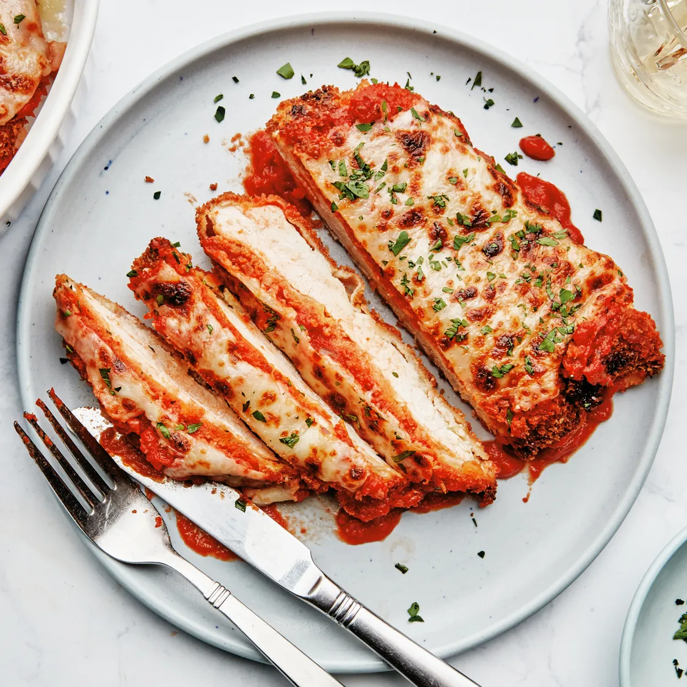

Chicken Parmesan

Description
Chicken Parmesan, or Chicken Parm, is a classic Italian-American dish featuring breaded and fried chicken breasts topped with marinara sauce and melted mozzarella and Parmesan cheese. The chicken is baked to golden perfection, often served over pasta or with a side of garlic bread. It's a flavorful, crispy, and cheesy comfort food favorite.
Ingredients
-
Chicken breasts
- Breadcrumbs
- Parmesan cheese (grated)
- Mozzarella cheese (shredded)
- Marinara sauce
- Eggs (for breading
- Flour (for dredging)
- Olive oil
- Fresh basil or parsley (optional for garnish)
Steps
- **Prepare the chicken**: Pound the chicken breasts to an even thickness, then dredge them in flour, dip in beaten eggs, and coat with a mixture of breadcrumbs and grated Parmesan.
- **Fry the chicken**: Heat olive oil in a pan and fry the breaded chicken breasts until golden brown on both sides, about 4-5 minutes per side.
- **Top with sauce and cheese**: Place the fried chicken in a baking dish, spoon marinara sauce over each piece, and sprinkle with shredded mozzarella and more Parmesan.
-
**Bake**: Bake at 375°F (190°C) for 15-20 minutes, until the cheese is melted and bubbly.
- **Serve**: Garnish with fresh basil or parsley and serve with pasta or your favorite sides.